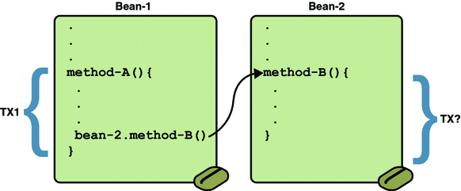

Container-Managed Transactions
In an enterprise bean with container-managed transaction demarcation, the EJB container sets the boundaries of the transactions. You can use container-managed transactions with any type of enterprise bean: session, or message-driven. Container-managed transactions simplify development because the enterprise bean code does not explicitly mark the transaction’s boundaries. The code does not include statements that begin and end the transaction.
By default if no transaction demarcation is specified enterprise beans use container-managed transaction demarcation.
Typically, the container begins a transaction immediately before an enterprise bean method starts. It commits the transaction just before the method exits. Each method can be associated with a single transaction. Nested or multiple transactions are not allowed within a method.
Container-managed transactions do not require all methods to be associated with transactions. When developing a bean, you can specify which of the bean’s methods are associated with transactions by setting the transaction attributes.
Enterprise beans that use container-managed transaction demarcation must not use any transaction management methods that interfere with the container’s transaction demarcation boundaries. Examples of such methods are the commit, setAutoCommit, and rollback methods of java.sql.Connection or the commit and rollback methods of javax.jms.Session. If you require control over the transaction demarcation, you must use application-managed transaction demarcation.
Enterprise beans that use container-managed transaction demarcation also must not use the javax.transaction.UserTransaction interface.
Transaction Attributes
A transaction attribute controls the scope of a transaction. Figure 33-1 illustrates why controlling the scope is important. In the diagram, method-A begins a transaction and then invokes method-B of Bean-2. When method-B executes, does it run within the scope of the transaction started by method-A, or does it execute with a new transaction? The answer depends on the transaction attribute of method-B.
Figure 33-1 Transaction Scope
A transaction attribute can have one of the following values:
Required
RequiresNew
Mandatory
NotSupported
Supports
Never
Required Attribute
If the client is running within a transaction and invokes the enterprise bean’s method, the method executes within the client’s transaction. If the client is not associated with a transaction, the container starts a new transaction before running the method.
The Required attribute is the implicit transaction attribute for all enterprise bean methods running with container-managed transaction demarcation. You typically do not set the Required attribute unless you need to override another transaction attribute. Because transaction attributes are declarative, you can easily change them later.
RequiresNew Attribute
If the client is running within a transaction and invokes the enterprise bean’s method, the container takes the following steps:
Suspends the client’s transaction
Starts a new transaction
Delegates the call to the method
Resumes the client’s transaction after the method completes
If the client is not associated with a transaction, the container starts a new transaction before running the method.
You should use the RequiresNew attribute when you want to ensure that the method always runs within a new transaction.
Mandatory Attribute
If the client is running within a transaction and invokes the enterprise bean’s method, the method executes within the client’s transaction. If the client is not associated with a transaction, the container throws the TransactionRequiredException.
Use the Mandatory attribute if the enterprise bean’s method must use the transaction of the client.
NotSupported Attribute
If the client is running within a transaction and invokes the enterprise bean’s method, the container suspends the client’s transaction before invoking the method. After the method has completed, the container resumes the client’s transaction.
If the client is not associated with a transaction, the container does not start a new transaction before running the method.
Use the NotSupported attribute for methods that don’t need transactions. Because transactions involve overhead, this attribute may improve performance.
Supports Attribute
If the client is running within a transaction and invokes the enterprise bean’s method, the method executes within the client’s transaction. If the client is not associated with a transaction, the container does not start a new transaction before running the method.
Because the transactional behavior of the method may vary, you should use the Supports attribute with caution.
Never Attribute
If the client is running within a transaction and invokes the enterprise bean’s method, the container throws a RemoteException. If the client is not associated with a transaction, the container does not start a new transaction before running the method.
Summary of Transaction Attributes
Table 33-1 summarizes the effects of the transaction attributes. Both the T1 and the T2 transactions are controlled by the container. A T1 transaction is associated with the client that calls a method in the enterprise bean. In most cases, the client is another enterprise bean. A T2 transaction is started by the container just before the method executes.
In the last column of Table 33-1, the word None means that the business method does not execute within a transaction controlled by the container. However, the database calls in such a business method might be controlled by the transaction manager of the DBMS.
Table 33-1 Transaction Attributes and Scope
Transaction Attribute |
Client’s Transaction |
Business Method’s Transaction |
|---|---|---|
Required |
None |
T2 |
T1 |
T1 |
|
RequiresNew |
None |
T2 |
T1 |
T2 |
|
Mandatory |
None |
error |
T1 |
T1 |
|
NotSupported |
None |
None |
T1 |
None |
|
Supports |
None |
None |
T1 |
T1 |
|
Never |
None |
None |
T1 |
Error |
Setting Transaction Attributes
Transaction attributes are specified by decorating the enterprise bean class or method with a javax.ejb.TransactionAttribute annotation, and setting it to one of the javax.ejb.TransactionAttributeType constants.
If you decorate the enterprise bean class with @TransactionAttribute, the specified TransactionAttributeType is applied to all the business methods in the class. Decoration a business method with @TransactionAttribute applies the TransactionAttributeType only to that method. If a @TransactionAttributeannotation decorates both the class and the method, the method TransactionAttributeType overrides the class TransactionAttributeType.
The TransactionAttributeType constants encapsulate the transaction attributes described earlier in this section.
Required: TransactionAttributeType.REQUIRED
RequiresNew: TransactionAttributeType.REQUIRES_NEW
Mandatory: TransactionAttributeType.MANDATORY
NotSupported: TransactionAttributeType.NOT_SUPPORTED
Supports: TransactionAttributeType.SUPPORTS
Never: TransactionAttributeType.NEVER
The following code snippet demonstrates how to use the @TransactionAttribute annotation:
@TransactionAttribute(NOT_SUPPORTED)
@Stateful
public class TransactionBean implements Transaction {
...
@TransactionAttribute(REQUIRES_NEW)
public void firstMethod() {...}
@TransactionAttribute(REQUIRED)
public void secondMethod() {...}
public void thirdMethod() {...}
public void fourthMethod() {...}
}In this example, the TransactionBean class’s transaction attribute has been set to NotSupported. firstMethod has been set to RequiresNew, and secondMethod has been set to Required. Because a @TransactionAttribute set on a method overrides the class @TransactionAttribute, calls to firstMethod will create a new transaction, and calls to secondMethod will either run in the current transaction, or start a new transaction. Calls to thirdMethod or fourthMethod do not take place within a transaction.
Rolling Back a Container-Managed Transaction
There are two ways to roll back a container-managed transaction. First, if a system exception is thrown, the container will automatically roll back the transaction. Second, by invoking the setRollbackOnly method of the EJBContext interface, the bean method instructs the container to roll back the transaction. If the bean throws an application exception, the rollback is not automatic but can be initiated by a call to setRollbackOnly.
Synchronizing a Session Bean’s Instance Variables
The SessionSynchronization interface, which is optional, allows stateful session bean instances to receive transaction synchronization notifications. For example, you could synchronize the instance variables of an enterprise bean with their corresponding values in the database. The container invokes the SessionSynchronization methods (afterBegin, beforeCompletion, and afterCompletion) at each of the main stages of a transaction.
The afterBegin method informs the instance that a new transaction has begun. The container invokes afterBegin immediately before it invokes the business method.
The container invokes the beforeCompletion method after the business method has finished, but just before the transaction commits. The beforeCompletion method is the last opportunity for the session bean to roll back the transaction (by calling setRollbackOnly).
The afterCompletion method indicates that the transaction has completed. It has a single boolean parameter whose value is true if the transaction was committed and false if it was rolled back.
Methods Not Allowed in Container-Managed Transactions
You should not invoke any method that might interfere with the transaction boundaries set by the container. The list of prohibited methods follows:
You can, however, use these methods to set boundaries in application-managed transactions.